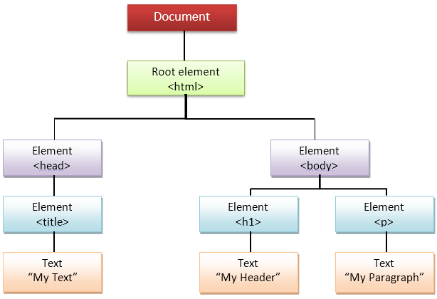

Using OXPath: Prerequisites & Basic
Before we access OXPath examples, we need to have some basic understanding about the structure of web pages
What are HTML, CSS, DOM and XML
Skip this part if you are familiar with these concepts
You may be not willing to learn the elaborate definition and rationale of technical jargons.
(If you do want to learn it fully, please click the links here: HTML, CSS, DOM, XML)
Imagine you went into a buffet and are going to have a dinner.
And that buffet resturant is the web page you are expecting to see.
HTML files prepare all the ingredients for your dinner

In the HTML, everything is enclosed in tags. Tags are red in the above example.
DOM represents the process of cooking. In this process, we take everything from HTML, process them according to the recipe.
CSS decides how the buffet table is placed and decorated
This is what CSS looks like:

XML could be used in many ways, but here it just the way we organize the dinner you served (or scrped from the web) on your table.
I have to admit this analogy is very imprecise. However, I hope it can help you to get some idea of how the scraper works
Everything comes from the HTML. To successfully scrape the data, we need to know how they are distributed in the HTML
Okay, let's see how OXPath handle a simple HTML web page
In the above picture, OXPath Expression is telling us how to extract data from the HTML source and export as the XML Output
The 7 lines of OXPath Expression are extracting the metadata of a book in this web page
It's not hard to understand. See the explanation in this table:
| OXPath Expression | Meaning |
|---|---|
doc('http://edm2014.org/?page=proceedings') | Go to the webpage at http://edm2014.org/?page=proceedings |
//*[@id'content']/p[./em]:record | Search for any node whose id is content, then select all the p nodes which are children of the 'content' nodes. These "p" node will be extracted as record |
[./em]:<authors=string(.)>] | all the "em" nodes that are children of the above "p" nodes will be extracted as authors. Their inner text will also be extracted |
[./text()[1]:<title=string(.)>] | select the first text of the current node("p"), extract and store it in "title" tag |
[.br[2]/following-sibling::text()[1]:<pages=substring-after(.,"Pages ")>] | select the second "br" of the current node, then select all text node that are following siblings of this "br", extract the substring(part of the text) after "Pages " in "pages" tag |
[./a:<url=string(@href)>] | next step: select a "a" node, extract the "href" attribute in a "url" tag |
[./preceding::strong[1]:<header=string(.)>] | Go back to previous nodes, select the nearest "strong" node, extract the inner text in a "header" tag |